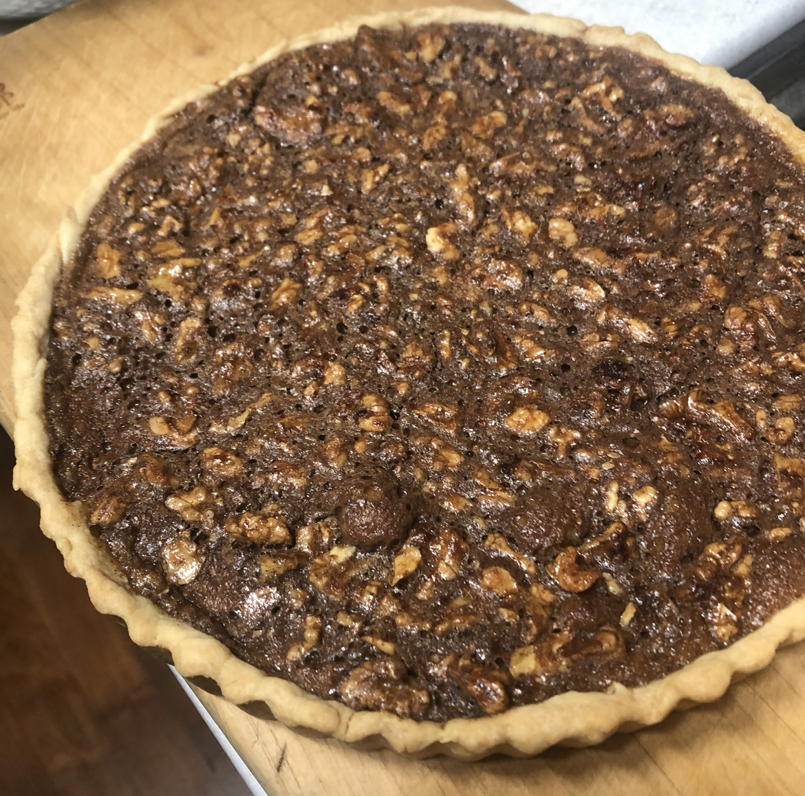

Walnut pie
겉재료: 노른자, 우유, 박력분, 설탕, 소금, 버터, 물
속재료: 물엿, 물, 소금, 계란, 흑설탕, 계피가루, 호두
1. 겉재료를 모두 섞어 반죽을 만든다.
2. 반죽을 냉동실에 20분간 휴지시킨다.
3. 속재료를 모두 섞는다.
4. 겉재료를 파이판에 펴고 포크로 구멍을 낸다.
5. 위에 속재료를 붓는다.
6. 180도에서 40분 굽는다.